CascadePSP: Toward Class-Agnostic and Very High-Resolution Segmentation via Global and Local Refinement
通过全局和局部细化实现类不可知和非常高分辨率的分割
Motivation
- 语义分割一般只训练固定分辨率范围内的图像，通过对低分辨率图像上采样得到高分辨率图像是不足以描述高分辨率图像细节的。
- 受限于显存，低分辨率的模型没法推广到高分辨率情况
- 超分辨率图像标注难以获取
- 目前的超分图分割主要方法包括下采样和裁剪，下采样方法消除了细节信息，裁剪方法破坏了图像块之间的上下文信息
Contribution
- 提出了CascadePSP，这是一种通用的级联分割细化模型，它可以细化任何给定的输入分割，在不进行微调的情况下提高先进分割模型的性能。
- 证明了该方法可以产生高质量和高分辨率的分割，这是以前基于深度学习的方法所不能实现的。
- 做了个数据集，叫BIG dataset，有50个验证和100个测试，它可以作为一个精确的评价数据集用于非常高分辨率的语义图像分割任务。
Related Works
语义分割
全卷积网络（FCN），通过自下而上的，带有广视野的上下文信息
特征金字塔（PSP），使用不同尺度的图像、或者是源于空间池化、拓展卷积等获得的不同感受野特征
编码器解码器（Encoder-Decoder），先减少维度捕获高级语义，然后使用解码器回复空间范围，再加上跳跃链接获得更清晰的边界。
细化分割
基于FCN的方法通常不会产生高质量的分割。研究人员已经用图结构模型解决了这个问题，如条件随机场（CRF）或区域生长。它们通常坚持低层次的颜色边界，而没有充分利用高级语义信息，并且不能修复较大的错误区域。由于计算和内存的限制，基于传播的方法不能处理非常高分辨率的数据。单独的细分模块也被用于提高边界精度，他们的模型接受的是端到端的训练，这种方法的模型，使用大模型容易出现过拟合，而浅层优化网络的优化能力有限。
级联网络
多尺度分析在许多计算机视觉任务中同时利用了大尺度和小尺度特征，如边缘检测、目标检测和分割。特别是，有许多方法在每个阶段预测独立的结果，并将它们合并以获得多尺度信息。我们的方法不仅从粗糙的尺度中融合特征，而且使用它们作为下一个更精细的层次的输入之一。文章证明，添加粗的输出作为下一层的输入并不会改变系统模型，因此同样的网络可以递归地用于更高分辨率的细化。
CascadePSP
Refinement Module
Architecture
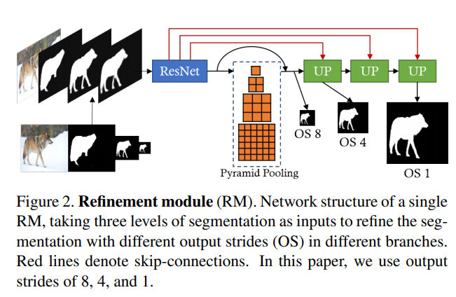
单个细分模块如图所示，细分模块用不同的比例拍摄图像和多个不完美的分割mask来生成精确的分割。 多尺度输入使模型能够捕获不同层次的结构和边界信息，使网络能够学习自适应地融合不同尺度的mask特征，在最精细的层次上完善分割。
所有较低分辨率的输入分割均被双线性上采样为相同大小，并与RGB图像连接在一起。使用ResNet-50作为主干网络的PSPNet来从输入中提取步长为8的特征图。其中金字塔池化大小为[1,2,3,6]，这有助于捕获全局上下文。除了最终的OS 1输出之外，模型还生成了1/8和1/4的分割结果，并跳过1/2来提供纠正局部错误边界的灵活性。
为了重建在提取过程中丢失的像素级图像细节，采用了来自主干网络的跳跃连接，并使用上采样模块融合了特征。将skip分支的特征和来自主干分支的双线性上采样的特征连接起来，并使用两个ResNet块对其进行处理。使用2层1×1conv生成分割输出，然后进行sigmoid函数激活。
Loss
1/8 采用交叉熵loss，os1采用L1+L2 loss ，1/4 采用交叉熵和L1+L2的平均值。不同的大小采用不同的loss，因为粗略分割主要是全局的结构忽略局部细节，而细化分割主要是依赖于局部分割的像素级的准确。为了更好的细化边缘，在os1输出上也采用了分割梯度幅度的L1损失。 分割梯度由3×3平均滤波器和Sobel算子估计， 由于梯度与像素级损失相比更稀疏，文章用α来衡量它，在实验中被设置为5。
（Sobel算子主要用于获得数字图像的一阶梯度，常见的应用和物理意义是边缘检测。索贝尔算子是把图像中每个像素的上下左右四领域的灰度值加权差，在边缘处达到极值从而检测边缘。）
Ablation Study of Refinement Module
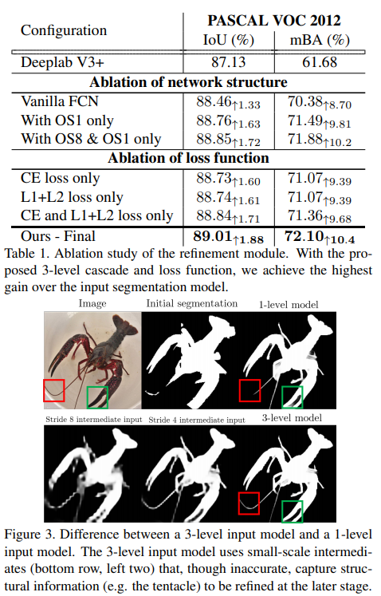
评估方法使用标准分割度量IoU。为了突出边界精度的感性重要性，文章提出了一种新的平均边界精度度量(mBA)。为了对不同大小的图像进行鲁棒估计，我们在半径为[3,w+h 300]中进行均匀采5个样本，在真值边界内的每个半径范围内计算分割精度，然后对这些值进行平均。表1显示，文章提出的模型在IoU方面取得了最显著的改进，在边界精度方面甚至更显著。
通过多级级联，模块可以将不同的细化阶段委托给不同的规模。如图3所示，这个3级模型使用了中间的小规模分段来更好地捕获对象结构。尽管模型有着相同的感受野，但3级模型相比于1级模型可以更好地利用结构线索产生更详细的分割。
Global and Local Cascade Refinement
在测试中，使用全局步骤和局部步骤通过采用相同的优化模块来执行高分辨率分割优化。具体来说，“全局”步骤考虑将整个调整大小后的图像用于修复结构，而“局部”步骤则使用图像裁剪以全分辨率优化细节。可以将相同的优化模块递归用于更高分辨率的优化。
Global Step
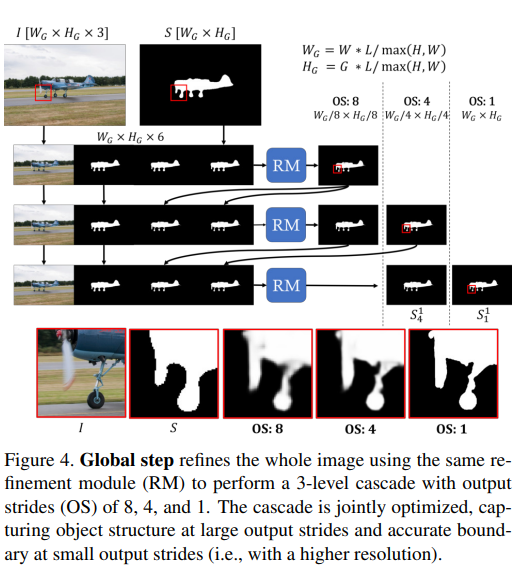
图4详细介绍了Global步骤的设计，该步骤使用3级级联优化整个图像。由于测试过程中的全分辨率图像通常无法放入GPU进行处理，因此首先对输入进行降采样，以使较长的轴具有L长度的同时保持相同的纵横比。
级联的输入使用input segmentation进行初始化，并进行复制以保持输入通道尺寸固定。在级联的第一级之后，其中一个输入通道将被双线性向上采样的粗略输出代替。重复此操作直到最后一级，其中输入既包含初始的分割结果，也包含来自先前级别的所有输出。
此设计使网络能够逐步修复分割的错误，同时保留初始分割结果中的详细信息。使用多个层次，可以粗略地勾画出对象，并在粗略层次中修复较大的误差，同时使用粗略层次提供的更强大的特征。这使得整个网络专注于精细层次的边界精度。
Local Step
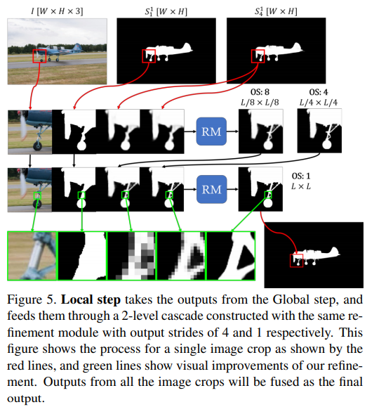
图5说明了Local步骤的细节。由于内存的限制，即使使用GPU，也无法单次处理非常高分辨率的图像。而且，训练数据和测试数据之间规模的急剧变化将导致分割质量变差。因此，这篇文章利用级联模型首先使用降采样后的图像执行全局优化，然后使用来自高分辨率图像的图像裁剪执行局部优化。这些剪裁使Local步骤能够在不考虑高分辨率训练数据的情况下处理高分辨率图像，同时Global步骤能够将图像上下文考虑在内。
在局部步骤中，模型采用全局步骤最后一级的两个输出，两个输出均被线性调整为图像的原始尺寸W×H。模型对图像进行尺寸为L×L的裁剪，裁剪输出的每边将被削去16个像素，以避免边界伪影，但图像边界处有例外。裁剪的步幅统一为L/2-32，这样大部分像素被4个裁剪覆盖，超出图像边界的无效裁剪被移位到与图像的最后一行/一列对齐。然后将图像裁剪送入2级级联，步幅分别为4和1。在融合过程中，由于图像上下文不同，不同补丁的输出可能会有差异，我们通过对所有输出值进行平均来解决这个问题。 对于分辨率更高的图像，可以采用从粗到细的方式递归应用局部步骤。
对于L的选择实验如下
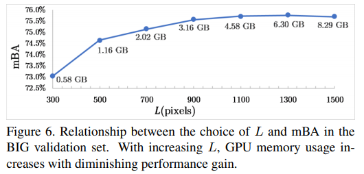
Ablation Study for Global and Local Refinement
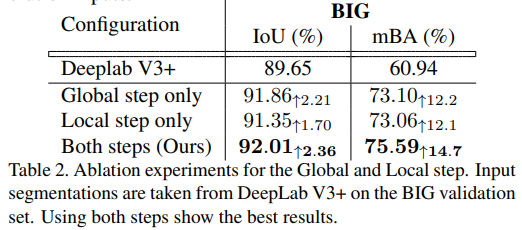
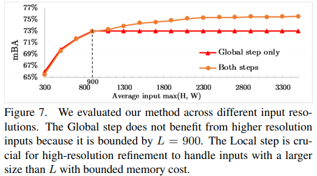
Experiment
数据集：PASCAL VOC 2012 , ADE20K,BIG(自己标出来的)
评价指标：mIoU、mBA（自己提出的）
训练方法：在训练过程中，随机抽取224×224个图像crop，并通过扰动ground truth来生成输入分割。具体扰动方法如下图所示：
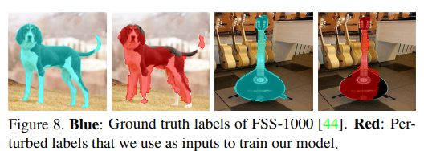
实验结果可视化：
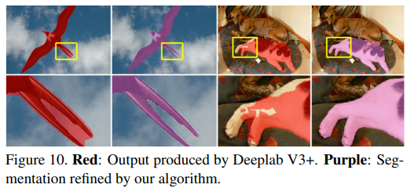
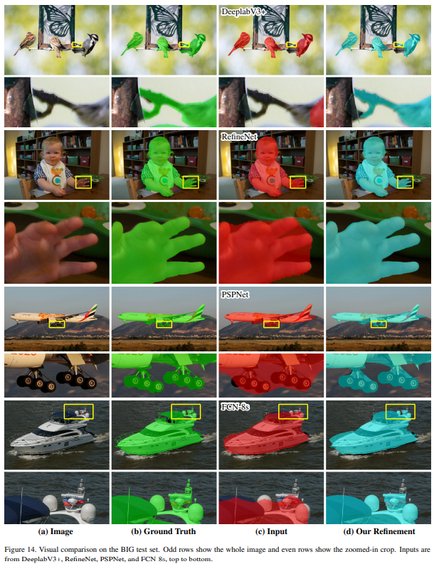
对比实验：
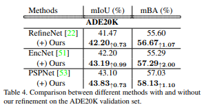
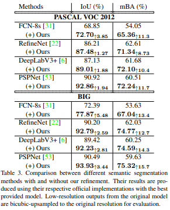
场景分割：
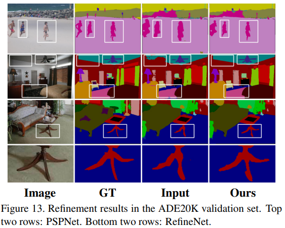
Conclusion
这是一个通用的分割细化框架，用于细化任何输入分割，并在没有任何微调的情况下获得更高的精度。CascadePSP执行高分辨率分割细化，即使模型从未见过任何高分辨率训练图像。在没有任何微调的情况下，在低分辨率数据上训练单一的细化模块，提出的全局步骤对整个图像进行细化，并为后续的局部步骤提供足够的图像上下文来执行全分辨率高质量的细化。